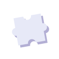

ICA at OC exists to fortify a child's inner self, not just to raise the next test score. This is how we think about teaching.
Look past the visible mistake to the cause beneath it. The same wrong answer can come from three completely different places, so the help must be different too.
They don't need to be told to slow down. They need the structure that lets them truly master the text and the problem.

They don't need a heavier volume of reading. They need targeted cognitive training that dives between the lines.
They don't need red-pen corrections. They first need expression practice to confidently bring out their own thoughts.
To look beyond immediate scores and fortify a child's inner self. That is the very reason ICA exists.
“Scores merely record past results, but a child's behavioral patterns reveal the true cause.”
“If children are different, their curriculum must naturally be different.”
“ICA does not cling to visible symptoms; we target the true root cause that generated them.”
“Only when a child can explain clearly and unhesitatingly on their own does ICA take the next step forward.”
“A mistake is not just an incorrect answer. It is the most decisive clue revealing the inner landscape of a child's learning.”
“When a child knows exactly what they know and what they do not know, they can finally move forward without relying on others.”
“When home and academy share the same understanding of the child and look in the exact same direction, the child feels secure and grows strongest.”
“When we shrink a task below a child's psychological boundary, the true action of holding the pencil begins.”
“When a child sees that a failure in learning is not a failure of their existence, they can rise again unbroken.”
“To look beyond immediate scores and fortify a child's inner self. That is the very reason ICA exists.”